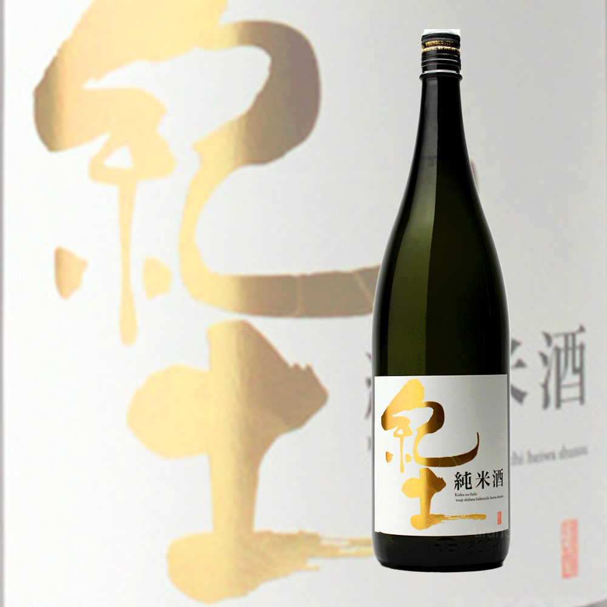
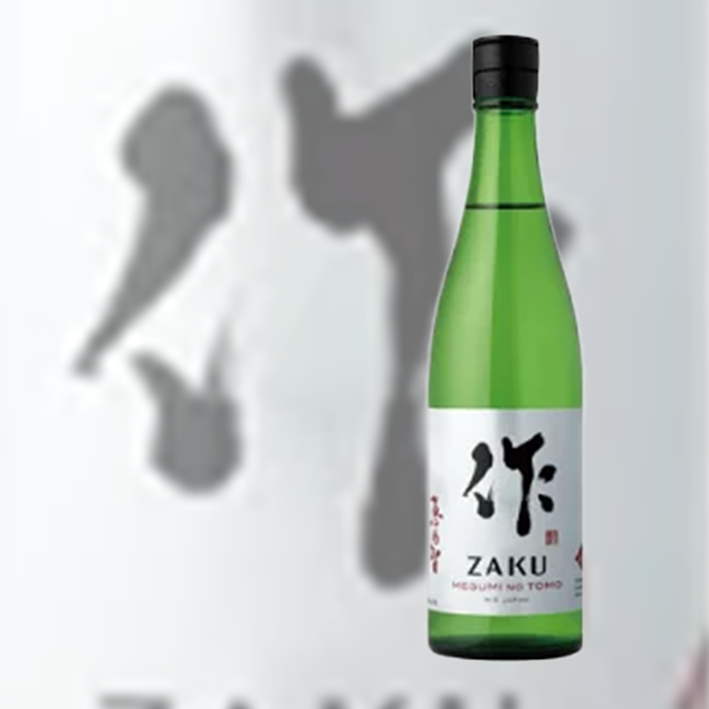
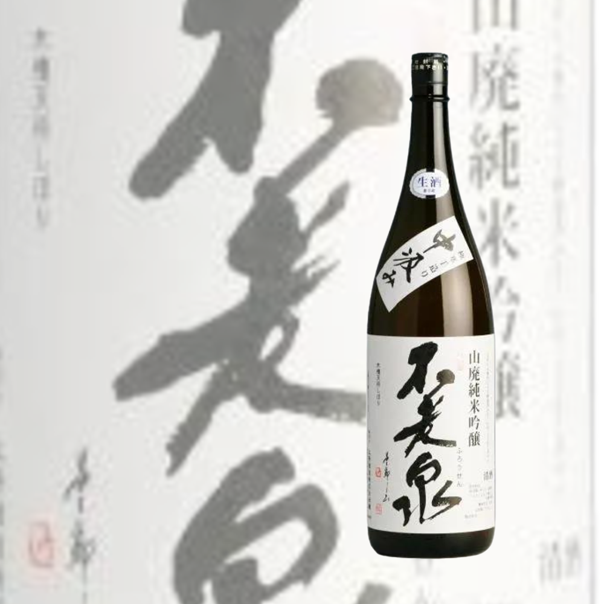
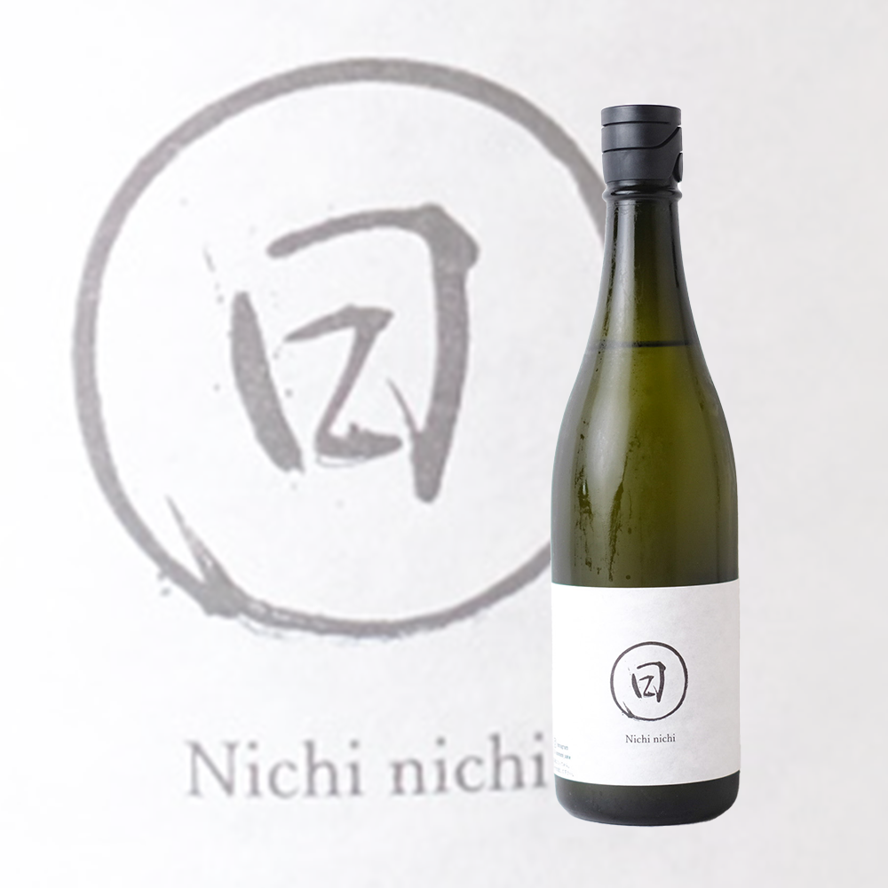
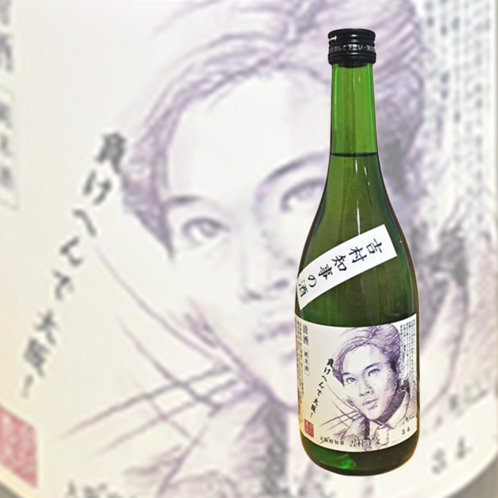
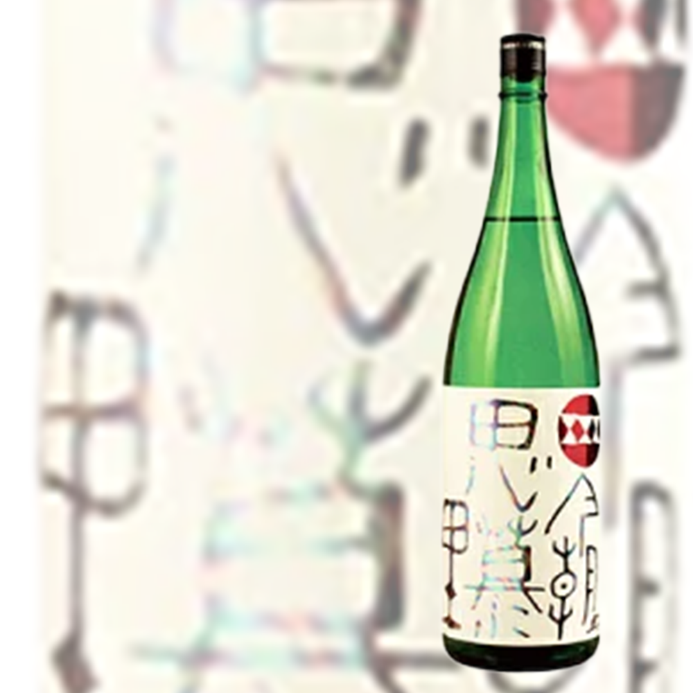
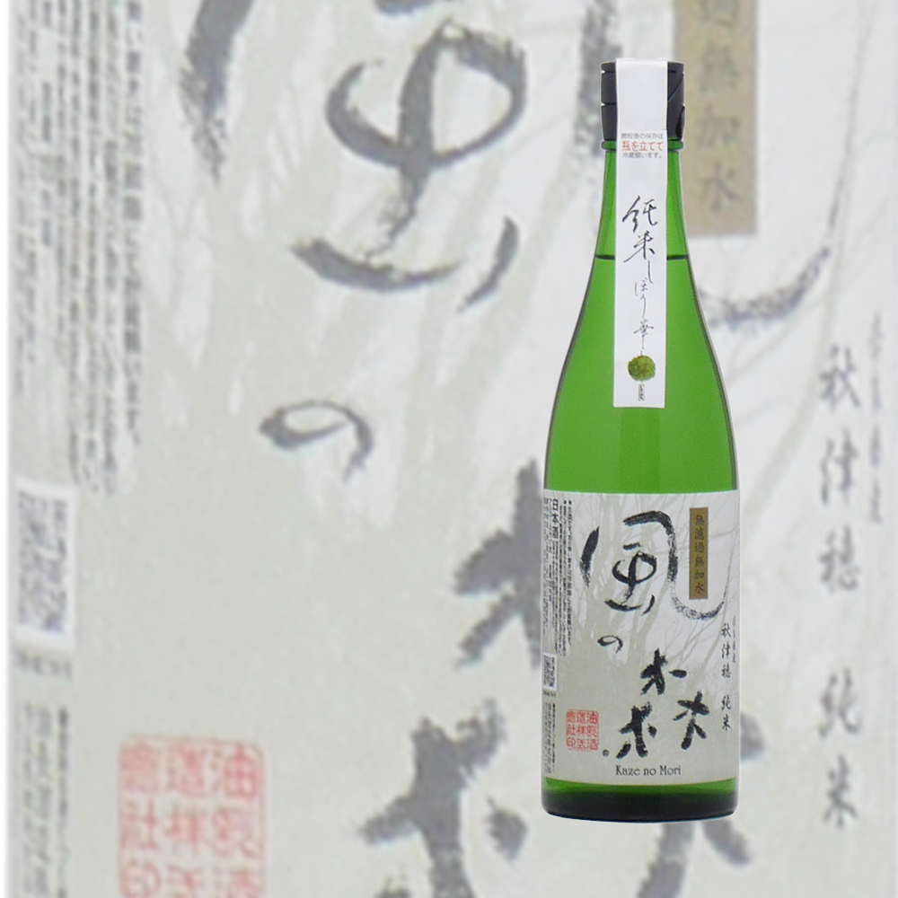

- 
- 紀土 純米酒
- バニラのような甘い香り、まろやかな口当たりに優しい味で日本酒初心者でも飲みやすいお酒になっています。
- 
- 作 恵乃智 純米吟醸
（めぐみのとも） - 洋梨のような甘くふくよかな香り、甘味や旨味があるしっかりと味わいでさらりと消えるキレの良い後味です。
- 作 恵乃智 純米吟醸
- 
- 不老泉 山廃純米吟醸 中汲み
- 果実のような落ち着いた香りでフレッシュな口当たり、日本酒搾りで一番美味しい中汲みだけを集めた逸品です。
- 
- 日日 山田錦 生もと
- 穏やかで優しい甘い香り、透き通るような甘さとじんわりと広がる旨味で誰でも飲みやすいようなお酒です。
- 
- 吉村知事の酒 純米酒
- 穀物感のあるすっきりした味わいにやや辛口でキレのある後味のお酒です。
- 
- 初手思慕里(しょてしぼり)
- どんな料理にも合わせやすい、スッキリとした米の旨味、甘みがふわりと広がる飲み心地が特徴です。
- 
- 風の森 秋津穂純米
しぼり華 - ほのかな果実の香り、口に含むと鼻に抜けるさわやかな香りと味わい。少し酸味ありすっきりした後味です。
- 風の森 秋津穂純米
ショッピングガイド
お支払方法について
◆銀行振込
指定口座へお振込みください。
銀行名：和歌山銀行(ワカヤマギンコウ)
支店名：高野町出張所(コウヤチョウシュッチョウショ)
口座番号：当座口152 / 口座名義：中坂井酒店
◆クレジットカード決済
ご利用いただけるカードは
ご注文方法
ご希望の商品ページより数量を選択し、カートへ入れてください。 注文完了後に、ご登録のメールアドレスを配信いたします。 しばらくたってもメールが届かない場合は、「迷惑フォルダ」をご確認 いただくか、注文履歴よりご注文状況をご確認ください。
◆配送
お客様には送料をご負担いただきます。
但し、お買い上げ商品の合計金額が7,700円（税込み）以上の場合には
送料を無料とさせていただきます。